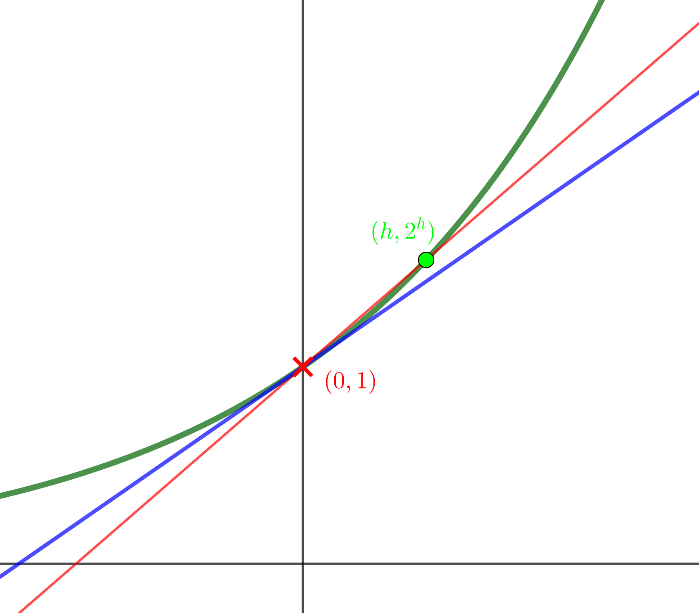
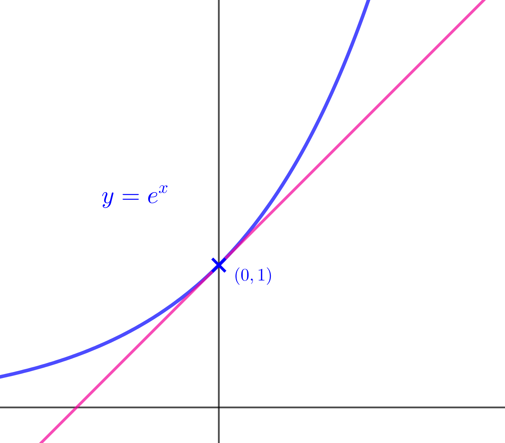
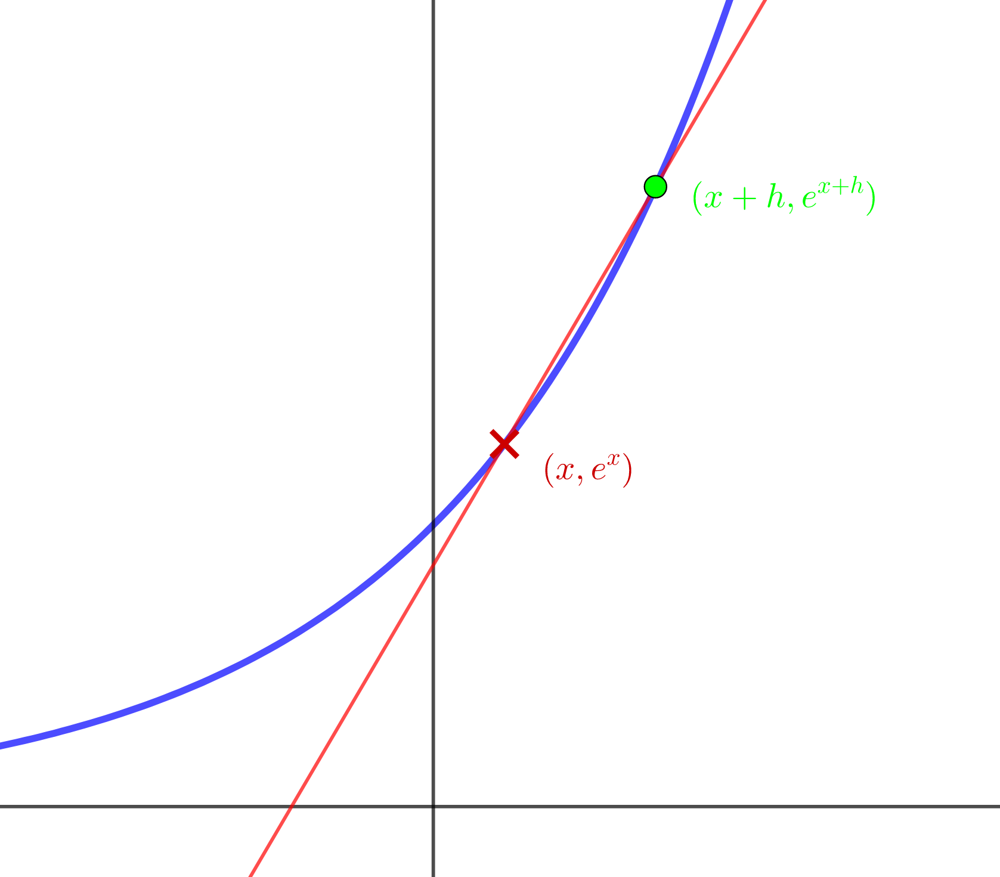

Work on the question in yellow.
When you are ready, navigate to the next page using arrow keys,
swiping, or hovering near the bottom of the page.
Compare your work to the answer in green.
Don't go to the page too soon!
Work your way through the whole document this way,
but take your time!
what is \(\boldsymbol{e}\) anyway?
\(e\) is a number. A very special number, to be sure, but just a number none the less. It is absolutely crucial to so many areas of mathematics: there is, for example, little in physics that we would be able to do without knowing about \(e\), and nothing whatsoever in studies of growth, decay, and populations.
\(\boldsymbol{e}\) by exponential graphs
There are many ways to start thinking about \(e\). Here's one:
Here is the graph \(y=2^{x}\) with a tangent added at the red cross.

Use the video below to help you understand and explain
why the gradient of the tangent at \(\left(0,1\right)\) is
\(\displaystyle{\lim_{h\to0}\frac{2^{h}-1}{h}}\)
Explain why the gradient of the tangent at \(\left(0,1\right)\) is
\(\displaystyle{\lim_{h\to0}\frac{2^{h}-1}{h}}\)
\[\begin{aligned}
\text{As }h\to0,&\text{ green dot approaches red cross}\\[1em]
\Rightarrow\;&\text{red line approaches blue tangent}\\[1em]
\Rightarrow\;&\text{red gradient}\to\text{gradient of tangent} \\[1em]
\Rightarrow\;&\frac{2^{h}-1}{h}\to\text{ gradient of tangent} \\[1em]
\Rightarrow\;&\text{gradient of tangent}=\lim_{h\to0}\frac{2^{h}-1}{h}
\end{aligned}\]
Use a calculator and increasingly small values of \(h\) to find an approximate
value for \(\displaystyle{\lim_{h\to0}\frac{2^{h}-1}{h}}\)
Use this to find an approximate value for the gradient of the tangent
to the curve \(y=2^x\) at the point \((0,\,1)\)
Use a calculator and increasingly small values of \(h\) to find an approximate
value for \(\displaystyle{\lim_{h\to0}\frac{2^{h}-1}{h}}\)
Use this to find an approximate value for the gradient of the tangent
to the curve \(y=2^x\) at the point \((0,\,1)\)
when \(\displaystyle{h=0.01,\;\frac{2^{h}-1}{h}\approx 0.696}\)
when \(\displaystyle{h=0.0001,\;\frac{2^{h}-1}{h}\approx 0.693}\)
when \(\displaystyle{h=0.0000001,\;\frac{2^{h}-1}{h}\approx 0.693}\)
At the point \(\left(0,1\right)\), the gradient of the curve \(y=2^{x}\) is less than \(1\), whereas the gradient of the curve \(y=3^{x}\) is more than \(1\).
So somewhere between \(2\) and \(3\) there should be a number \(a\) that makes the gradient of the curve \(y=a^{x}\) equal to \(1\). This is the number that we call \(e\).
What is the gradient of the tangent to the curve
\(y=a^{x}\) at the point \((0,\,1)\) in terms of \(a\)?
What is the gradient of the tangent to the curve
\(y=a^{x}\) at the point \((0,\,1)\) in terms of \(a\)?
The same process that we used when \(a=2\)
and \(a=3\) will show that
gradient\(=\displaystyle{\lim_{h\to0}\frac{a^{h}-1}{h}}\)
Experiment with your calculator to find the value of \(a\) that makes this gradient as close to \(1\) as you can.
Experiment with your calculator to find the
value of \(a\) that makes this gradient \(=\displaystyle{\lim_{h\to0}\frac{a^{h}-1}{h}}\)
as close to \(1\) as you can.
taking \(\displaystyle{h=0.0000001}\)
when \(\displaystyle{a=2.7,\;\frac{a^{h}-1}{h}\lt 1}\)
when \(\displaystyle{a=2.71,\;\frac{a^{h}-1}{h}\lt 1}\)
when \(\displaystyle{a=2.72,\;\frac{a^{h}-1}{h}\gt 1}\)
\[\Rightarrow 2.71\lt a\lt 2.72\]
when \(\displaystyle{a=2.717,\;\frac{a^{h}-1}{h}\lt 1}\)
when \(\displaystyle{a=2.718,\;\frac{a^{h}-1}{h}\lt 1}\)
when \(\displaystyle{a=2.719,\;\frac{a^{h}-1}{h}\gt 1}\)
\[\Rightarrow 2.718\lt a\lt 2.719\]

\(e\) is the number for which the gradient of
the curve \(y=e^{x}\) at the point \(\left(0,1\right)\) is \(1\).
Correct to 30 decimal places, \[e=2.718281828459045235360287471352\]
But \(e\) is irrational, so any attempt to write it as a decimal
can only be an approximation.
This property that the gradient of \(y=e^x\) at the point
\((0,\,1)\) is \(1\) may not seem that important. In fact, however,
it is this very property that will turn out to make \(e\) such
a crucial number in all physics (and other disciplines, too).
Next, we will begin to investigate why this is.
the exponential function
Now we know a bit about the number \(e\),
it's time to think more deeply about the exponential function \(f(x)=e^{x}\), sometimes written \(\exp(x)\).
We started with graphs of the form \(y=a^{x}\), and we defined \(e\) as the number for which the gradient of \(y=e^{x}\) is \(1\) at the point \((0,1)\).
This led us to the definition of \(e\) as the number for which
\[\lim_{h\to0}\frac{e^{h}-1}{h}=1\]
Now, we are going to go back to graphs and use this
property to show that, if \(f(x)=e^{x}\), then \[f'(x)=f(x)\]
for all values of \(x\), not only when \(x=0\).
Here is the graph \(y=e^x\). What is the gradient of the red line?

Here is the graph \(y=e^x\). What is the gradient of the red line?
Explain why this is the same as \[{e^{x}\lim_{h\to0}\frac{e^{h}-1}{h}}\]
Explain why \[\lim_{h\to 0}e^{x}\cdot\frac{e^{h}-1}{h}\] is the same as \[{e^{x}\lim_{h\to0}\frac{e^{h}-1}{h}}\]
As \(h\) changes, \(\frac{e^{h}-1}{h}\) changes. If I multiply
this fraction by a number and then take the limit as \(h\to0\),
this is the same as taking the limit first and then multiplying by
a number. But, as far as \(h\) is concerned, \(e^x\) is just a number.
It's the number for which the gradient of the curve \(y=e^{x}\) is always equal to the value of \(y\).
\(\boldsymbol{e}\) as a limit
Use your calculator to find:
\[\begin{aligned}
\left(1+\frac{1}{2}\right)^{2}\\[2em]
\left(1+\frac{1}{3}\right)^{3}\\[2em]
\left(1+\frac{1}{4}\right)^{4}\\[2em]
\left(1+\frac{1}{5}\right)^{5}\\[2em]
\end{aligned}\]
and it looks as though the expression is getting increasingly close to \(e\)
Next, we will figure out why it is that
\[\text{as }n\to\infty,\;\left(1+\frac{1}{n}\right)^{n}\to e\]
Show that, if \(\displaystyle{\lim_{h\to0}\frac{e^{h}-1}{h}=1}\),
then for small values of \(h\),
\[e\approx\left(1+h\right)^{\frac{1}{h}}\]
Use this to show that
\[e\approx\left(1+\frac{1}{n}\right)^{n}\]and hence that
\[e=\lim_{n\to\infty}\left(1+\frac{1}{n}\right)^{n}\]
Show that, if \(\displaystyle{\lim_{h\to0}\frac{e^{h}-1}{h}=1}\),
then for small values of \(h\),
\(e\approx\left(1+h\right)^{\frac{1}{h}}\)
\[\begin{aligned}
\text{For small values of }h,\;&\frac{e^{h}-1}{h}\approx1\\[1em]
\Rightarrow \;&e^{h}\approx1+h\\[1em]
\Rightarrow \;&e\approx\left(1+h\right)^{\frac{1}{h}}\\[1em]
\end{aligned}\]
Show that
\(e\approx\left(1+\frac{1}{n}\right)^{n}\) and hence that
\[e=\lim_{n\to\infty}\left(1+\frac{1}{n}\right)^{n}\]
\[\begin{aligned}
\text{Put } n=\frac{1}{h},\quad &h=\frac{1}{n}\quad \text{so that as }h\to 0,\;n\to\infty\\[1em]
\Rightarrow \;&e\approx\left(1+\frac{1}{n}\right)^{n}\\[1em]
\Rightarrow \;&e=\lim_{n\to\infty}\left(1+\frac{1}{n}\right)^{n}
\end{aligned}\]
Now we are going to extend this to a similar result for \(e^{x}\).
Remembering that \[e=\lim_{h\to 0}(1+h)^\frac{1}{h}\]
and using the substitution \(k=\frac{h}{x}\), show that
\[e^{x}=\lim_{h\to 0}(1+xh)^\frac{1}{h}\] and hence that
\[e^{x}=\lim_{n\to\infty}\left(1+\frac{x}{n}\right)^{n}\]
Remembering that \(\displaystyle{e=\lim_{h\to 0}(1+h)^\frac{1}{h}}\)
and using the substitution \(k=\frac{h}{x}\),
\[\text{show that }e^{x}=\lim_{h\to 0}(1+xh)^\frac{1}{h}\text{ and hence that}\]
\[e^{x}=\lim_{n\to\infty}\left(1+\frac{x}{n}\right)^{n}\]